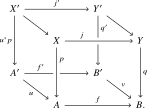
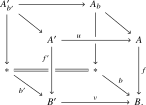

This section concerns base change for anima-valued left Kan extensions. Given a pullback square, there are two complementary hypotheses. Smoothness of the horizontal functor makes the initial-left-fibration factorization stable under pullback. Properness of the vertical functor instead gives a pointwise formula on strict fibers. We first identify the Beck–Chevalley map under straightening and prove smooth base change. We then characterize terminal functors by colimit cofinality, derive the pointwise formula, and prove proper base change.
9.6.1 The Beck–Chevalley map and smooth base change
Let \(f\colon A \to B\) be a functor between small categories. Recall from Theorem 9.3.1 that the restriction functor \[ f^*\colon \Fun(B,\An) \to \Fun(A,\An) \] admits a left adjoint \(f_!\).
Construction 9.6.1 (The Beck–Chevalley map under straightening). Consider a commutative square of small categories and a functor \(F\colon A \to \An\). This data determines the Beck–Chevalley map \[ \BC_! \colon f'_!u^*(F) \to v^*f_!(F) \] in \(\Fun(B',\An)\). The Beck–Chevalley map is defined as the composite \[ f'_!u^*(F) \xrightarrow{\eta} f'_!u^*f^*f_!(F) = f'_!{f'}^*v^*f_!(F) \xrightarrow{\varepsilon} v^*f_!(F), \] where \(\eta\colon \id_{\Fun(A,\An)} \to f^*f_!\) is the unit of \(f_! \dashv f^*\) and \(\varepsilon\colon f'_!{f'}^* \to \id_{\Fun(B',\An)}\) is the counit of \(f'_! \dashv {f'}^*\). Equivalently, \(\BC_!\) is adjoint to \[ u^*(F) \xrightarrow{\eta} u^*f^*f_!F = {f'}^*v^*f_!(F). \]
We next describe this map under straightening. Consider the pullback square
where the right vertical map is the universal left fibration with small fibers. Choose a factorization of \(f \circ p\colon X \to B\) as
\[
X \xrightarrow{j} Y \xrightarrow{q} B,
\]
where \(j\) is initial and \(q\) is a left fibration. In particular, \(q\) is given via a pullback square
for some functor \(f_!(F)\). The commutative square on the left exhibits the unit \(F \to f^*f_!F\). Pulling back along \(v\) and \(u\), we obtain the commutative diagram
Write \(X':=A'\times_A X\). We may factor \(f' \times_f j\) as
\[
X' \xrightarrow{j'} Y' \xrightarrow{r} B' \times_B Y,
\]
where \(j'\) is initial and \(r\) is a left fibration. Then the composite
\[
q' := v^*q \circ r \colon Y' \to B'
\]
is again a left fibration. These factorizations fit into the commutative diagram

Theorem 9.6.2 (Smooth base change). Consider a pullback square of small categories where \(v\) is smooth. Then for any functor \(F\colon A \to \An\), the Beck–Chevalley map \[ \BC_!\colon f'_!u^*(F) \to v^*f_!(F) \] is an isomorphism.
Proof
Use the notation of the preceding construction. The composite \[ X'=A'\times_A X \xrightarrow{j'}Y'\xrightarrow{r}B'\times_B Y \] is the pullback of \(j\colon X\to Y\) along the projection \(B'\times_B Y\to Y\). This projection is a base change of the smooth functor \(v\), and is therefore smooth by Lemma 9.4.4. Since \(j\) is initial, its pullback \(rj'\) is initial. The functor \(j'\) is initial by construction, so Proposition 9.1.8 implies that \(r\) is initial. It is also a left fibration. Hence Lemma 9.1.7 shows that \(r\) is an equivalence. Under the preceding directed-univalence identification, \(r\) classifies \(\BC_!\), so Corollary 8.3.16 shows that the Beck–Chevalley map is an isomorphism.
9.6.2 Cofinality and pointwise Kan extensions
The Beck–Chevalley map for the terminal functor to \(*\) is the canonical comparison between two colimits. The following result therefore identifies our terminal functors with the usual colimit-cofinal functors.
Proposition 9.6.3. Let \(A\) and \(B\) be small categories. A functor \(i\colon A \to B\) is terminal if and only if, for any functor \(F\colon B \to \An\), the Beck–Chevalley map \[ \BC_!\colon \colim_A i^*F \to \colim_B F \] from Construction 9.6.1 is an isomorphism.
Proof
We first rewrite the Beck–Chevalley map as a morphism of left fibrations. Consider the pullback diagram Since \(q\) is a left fibration, it is proper. Hence, if \(i\) is terminal, its pullback \(j\) is terminal. Writing \(p_B\colon B\to *\) for the terminal functor, the Beck–Chevalley map is \[ \colim_A i^*F \iso (p_B)_!i_!i^*F \xrightarrow{(p_B)_!(\mathrm{counit})} (p_B)_!F = \colim_B F. \] Under the description of Remark 9.3.4, this is the map \[ \Pi_{\infty}(j) \colon \Pi_{\infty}(X) \to \Pi_{\infty}(Y). \] It is an equivalence because every terminal functor is a weak homotopy equivalence.
Conversely, suppose that the Beck–Chevalley map is an equivalence for every \(F\). For an object \(b\) of \(B\), take \(F\) to classify the left fibration \(B_{b/}\to B\). Its pullback along \(i\) is \(A_{b/}\to A\), and the corresponding Beck–Chevalley map is \[ \Pi_{\infty}(A_{b/})\to\Pi_{\infty}(B_{b/})\iso *. \] Hence every relative coslice \(A_{b/}\) is weakly contractible. The dual statement in Corollary 9.5.7 now shows that \(i\) is terminal.
Example 9.6.4 (The colimit of a morphism). Let \(F\colon[1]\to\An\) be a morphism of animae. Since the inclusion \(\{1\}\hookrightarrow[1]\) is terminal, Proposition 9.6.3 gives a canonical isomorphism \[ F(1)\iso\colim_{[1]}F. \]
For a proper functor, the general slice formula for a left Kan extension simplifies to a colimit over the strict fiber. This is the pointwise input for proper base change.
Lemma 9.6.5. Let \(f\colon A \to B\) be a proper functor between small categories. Consider an absolute object \(b\) of \(B\) and let \(A_b\) denote the fiber of \(f\) over \(b\). Then for any functor \(F\colon A \to \An\), there is a canonical isomorphism \[ \colim_{A_b} i^*F \iso b^*f_!(F) = f_!(F)(b) \] of animae, where \(i\colon A_b \to A\) denotes the inclusion of the fiber.
Proof
We will again translate this to a statement about left fibrations. Consider the left fibration \(p\colon X \to A\) associated to \(F\): Consider now the following pullback diagram: Since \(w_b\) is a right fibration, it is in particular smooth, hence by smooth base change (Theorem 9.6.2) we see that the canonical map \[ \BC_!\colon (f_{/b})_!v_b^*(F) \iso w_b^*f_!(F) \] is an isomorphism. Passing to colimits over \(B_{/b}\), we obtain an equivalence \[ \colim_{A_{/b}} v_b^*(F) \simeq \colim_{B_{/b}} (f_{/b})_!v_b^*(F) \simeq \colim_{B_{/b}} w_b^*f_!(F). \] Now consider the following commutative diagram: The square commutes by functoriality of Beck–Chevalley maps under pasting: the bottom horizontal map is the mate obtained from the smooth base-change isomorphism above, and its restrictions along the two terminal inclusions are precisely the two vertical maps and the canonical top comparison map. Since the inclusion \((b,\id_b)\colon * \to B_{/b}\) is terminal, the right vertical map is an equivalence by Proposition 9.6.3. But also \(i_b\) is terminal, since it is a base change of \((b,\id_b)\colon * \to B_{/b}\) along the proper functor \(f_{/b}\), hence also the left vertical map is an equivalence. By 2-out-of-3 it follows that also the top map is an equivalence, finishing the proof.
9.6.3 Proper base change
The proper base-change theorem says that left Kan extension along a proper functor commutes with arbitrary pullback. It follows from the pointwise formula of Lemma 9.6.5.
Theorem 9.6.6 (Proper base change). Consider a pullback square of small categories where \(f\) is proper. Then for every functor \(F\colon A \to \An\), the Beck–Chevalley map \[ f'_!u^*(F) \to v^*f_!(F) \] is a natural isomorphism.
Proof
By the pointwise criterion for isomorphisms of functors, it suffices to evaluate the Beck–Chevalley map at an object \(b'\) of \(B'\). Write \(b:=v(b')\). We must show that
\[
f'_!u^*(F)(b') \to v^*f_!(F)(b') = f_!(F)(v(b'))
\]
is an isomorphism in \(\An\). The pullback square induces a commutative diagram

9.6.4 Fiberwise criteria for later use
We finish with two consequences that recast the preceding base-change theorem as criteria for initiality. They will be used in Chapter 12 to analyze relative twisted-arrow constructions and the Yoneda embedding.
Corollary 9.6.7 (Proper base change in disguise). Let \(p\colon A \to B\) be a proper functor and consider a commutative square of the form where \(f\) is initial and both \(\varphi\) and \(\psi\) are left fibrations. Then, for any functor \(v\colon B' \to B\), the induced functor \[ g\colon B' \times_B X \to B' \times_B Y \] is again initial.
Proof
Choose a universe in which all the displayed categories and functors are small. The left fibration \(\varphi\) corresponds to a functor \(F\colon A \to \An\): Since \(p\varphi=\psi f\) and \(f\) is initial, the pair \(X\xrightarrow{f}Y\xrightarrow{\psi}B\) is an initial-left-fibration factorization of \(p\varphi\). Consequently, \(\psi\) is classified by \(p_!(F)\colon B\to\An\). Let \(p'\colon A' \to B'\) be defined by the pullback square Factor \(g\) as \[ B'\times_B X\xrightarrow{j'}Z\xrightarrow{r}B'\times_B Y, \] where \(j'\) is initial and \(r\) is a left fibration over \(B'\). Under directed univalence, \(r\) classifies the Beck–Chevalley map \[ p'_!u^*(F) \longrightarrow v^*p_!(F). \] This map is an isomorphism by Theorem 9.6.6, so \(r\) is an equivalence. Hence \(g=rj'\) is initial.
The next lemma promotes initiality on the fibers over one factor of a product base to global initiality. This is the form needed for the relative twisted-arrow construction.
Lemma 9.6.8. Consider a commutative square of the form
 where \(p\) and \(q\) are left fibrations. Assume that \(f\) is fiberwise initial over \(A\), meaning that for every object \(a\) in \(A\), \(f\) induces an initial functor
\[
f_a\colon X_a \to Y_a.
\]
Then \(f\) is initial.
where \(p\) and \(q\) are left fibrations. Assume that \(f\) is fiberwise initial over \(A\), meaning that for every object \(a\) in \(A\), \(f\) induces an initial functor
\[
f_a\colon X_a \to Y_a.
\]
Then \(f\) is initial.
Proof
Since \(q\) is a left fibration, it suffices to check that \(f\) is a covariant equivalence over \(A \times B\), see Proposition 9.2.4. For any object \(b\) of \(B\), we may consider the following commutative square
 obtained from the above commutative square by pulling back along \(B_{/b} \to B\). For any object \(a\) of \(A\), the commutative square
induces a commutative square
obtained from the above commutative square by pulling back along \(B_{/b} \to B\). For any object \(a\) of \(A\), the commutative square
induces a commutative square
 by pulling back along \(B_{/b} \to B\). The top map agrees with the map obtained from
by passing to fibers over \(a\). In particular, \((f_{/b})_a=(f_a)_{/b}\) is a pullback of the initial functor \(f_a\) along a base change of the smooth functor \(B_{/b}\to B\), and hence is initial.
by pulling back along \(B_{/b} \to B\). The top map agrees with the map obtained from
by passing to fibers over \(a\). In particular, \((f_{/b})_a=(f_a)_{/b}\) is a pullback of the initial functor \(f_a\) along a base change of the smooth functor \(B_{/b}\to B\), and hence is initial.
The functor \(X_{/b}\to A\) induced by \(p\) is proper: it is the composite of a left fibration with the proper projection \(A\times C_{/b}\to A\). Pulling back the terminal inclusion of the terminal object in \(A_{/a}\) therefore gives a terminal functor \[ (X_{/b})_a=(X_a)_{/b}\to (X_{/b})_{/a}=X_{/(a,b)}\, , \] hence a weak homotopy equivalence. Similarly, the functor \(Y_{/b}\to A\) induced by \(q\) yields a weak homotopy equivalence \[ (Y_{/b})_a=(Y_a)_{/b}\to (Y_{/b})_{/a}=Y_{/(a,b)}\, . \] This means that we have a commutative square of the form The top horizontal map and both vertical maps are weak homotopy equivalences. Hence 2-out-of-3 shows that \(f_{/(a,b)}\) is a weak homotopy equivalence. Since this holds for every \((a,b)\), Proposition 9.5.6 implies that \(f\) is a covariant equivalence over \(A\times B\), as required.
The chapter has established the cofinality factorization and used it in three ways. It constructs anima-valued left Kan extensions, recognizes initial functors by weakly contractible relative slices, and turns stability of initial and terminal functors under base change into the smooth and proper Beck–Chevalley theorems.